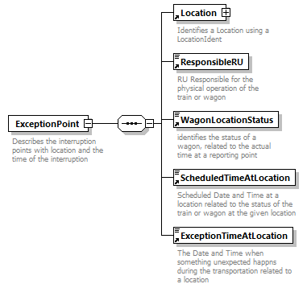

| diagram |  | ||
| namespace | http://taf-jsg.info/schemes | ||
| properties |
|
||
| children | Location ResponsibleRU WagonLocationStatus ScheduledTimeAtLocation ExceptionTimeAtLocation | ||
| used by |
|
||
| annotation |
|
||
| source | <xs:element name="ExceptionPoint"> <xs:annotation> <xs:documentation>Describes the interruption points with location and the time of the interruption</xs:documentation> </xs:annotation> <xs:complexType> <xs:sequence> <xs:element ref="Location"/> <xs:element ref="ResponsibleRU"/> <xs:element ref="WagonLocationStatus"/> <xs:element ref="ScheduledTimeAtLocation"/> <xs:element ref="ExceptionTimeAtLocation"/> </xs:sequence> </xs:complexType> </xs:element> |